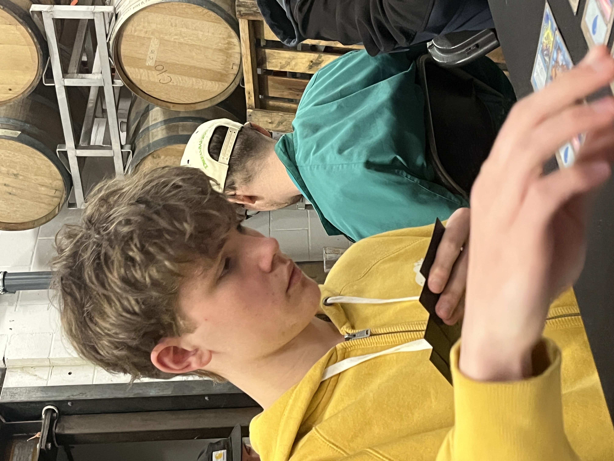
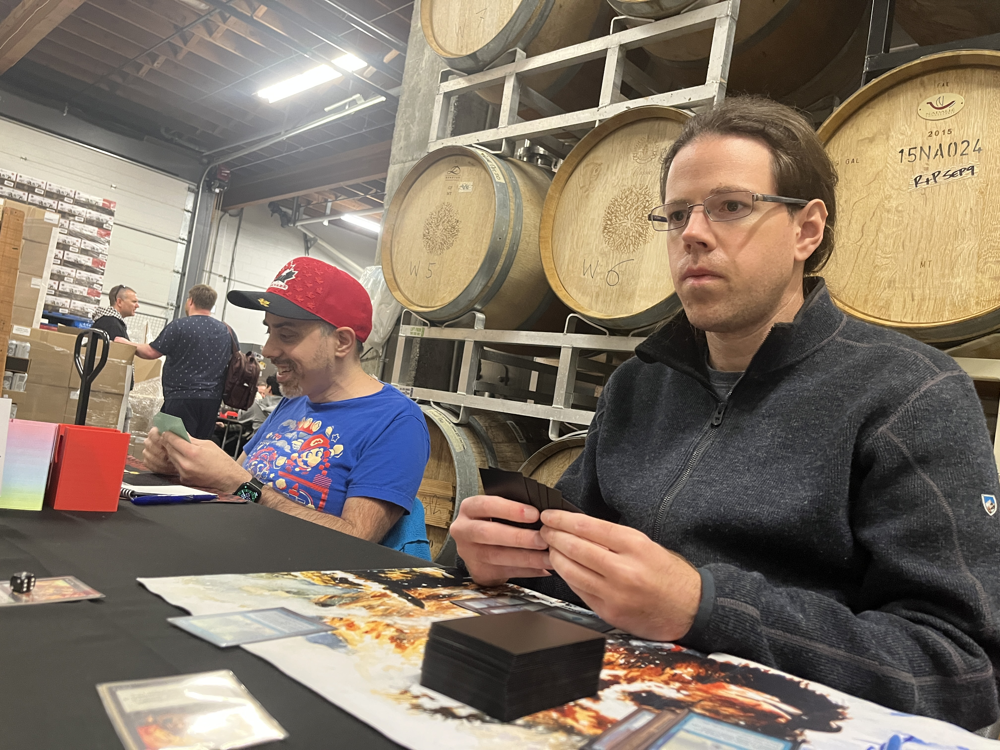
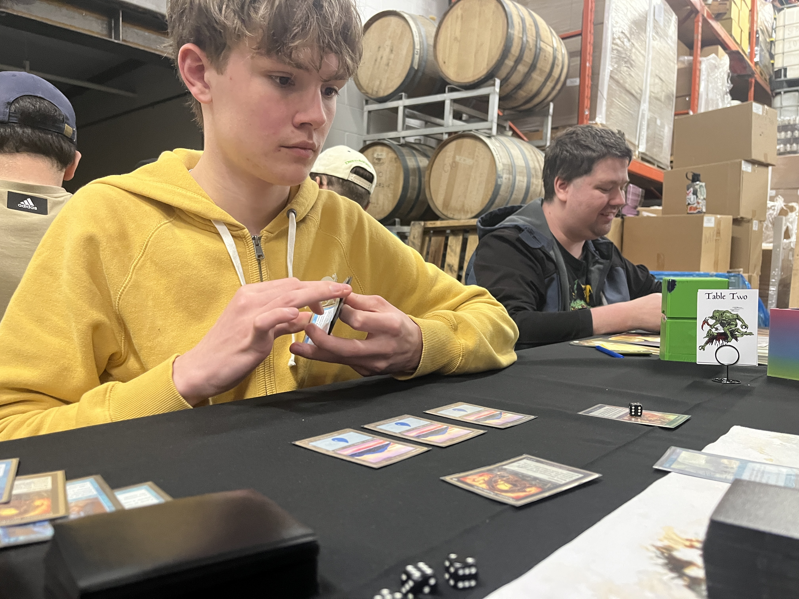
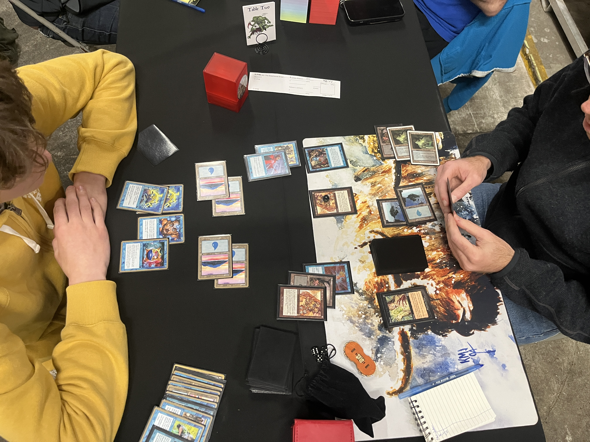
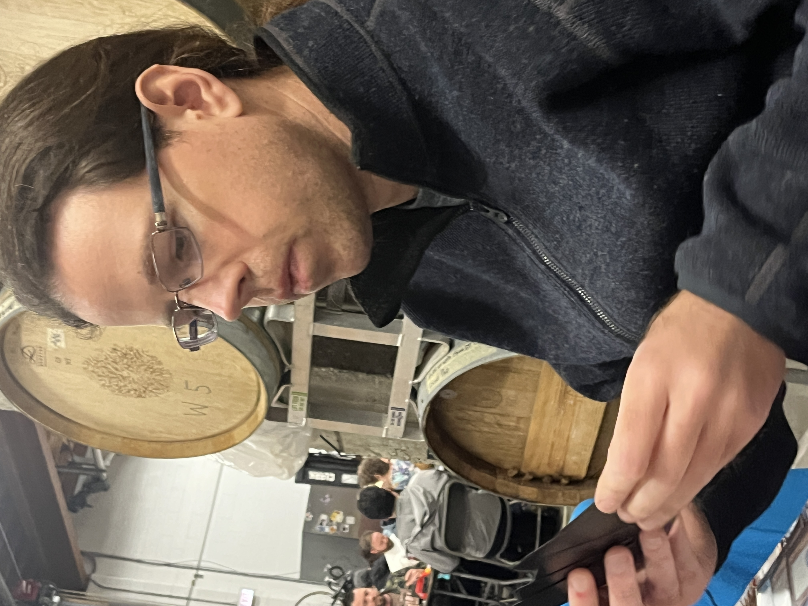

Round 3. Table 2.


Andrew KIDSTON vs Robert LUEMERS
Kidston and Luemers were among the 12 players remaining undefeated at 2–0.
Kidston was the runner-up at January's BCPMM #1, taking his same archetype — Nought — all the way to the finals before being dispatched by Goblins in the hands of Caitlyn Bethune. Coincidentally enough, Kidston was paired against Bethune in Round 1 of this event, this time coming out the victor. Was Kidston on the way to rewriting history?
Luemers, meanwhile, is a newcomer to the BCPMM. He'd already been awarded the "Road Warrior" prize in recognition of his journey all the way up from California. In part, this speaks to the grassroots enthusiasm for the Premodern format. In part, it represents a genuine curiosity by other Premodern "crews" as to just what was going on up in British Columbia. Luemers is an envoy from the East Bay Punks, affiliated with the Oakland/San Francisco scene. Jeffrey Scofield repping the Emerald City Trolls (Seattle) and Curran Delahanty repping Rose City Premodern (Portland) also made appearances.
Luemers was on Tog — well-practiced, and with no illusions about the danger presented by arguably the format's only "Tier 0" deck.
Game 1 —
Luemers double mulligans. Andrew leads with Peek, seeing lands, Counterspell, Gush.
Land-go, occasionally with a cantrip, continues on each side, until Kidston pulls the trigger on Turn 4.
He tried a Dreadnought — which gets Countered. And then another Dreadnought, which triggers a Gush from Luemers, but ultimately resolves, along with a Stifle.

Luemers, without an answer and down on cards, is quickly ready to move on to Game 2.
1–0 Kidston
Kidston only boards out 2 cards, bringing in 2 Brain Freezes from the sideboard.
One of the most fascinating aspects of Premodern is that despite no or subtle changes to the format, the metagame continues to evolve simply as a function of general format literacy and development. Case in point: Kidston's Nought deck from BCPMM #1 in January — albeit when Parallax Tide was still legal — didn't even play Brain Freeze in the sideboard.
Since then, Brain Freeze has become one of the most important cards in the archetype, giving it an "Overdrive" gear to surpass most anyone trying to out-control the strategy, given enough time.
Game 2 —

It's Luemers' turn to see what Kidston is working with.
Polluted Delta, fetch Swamp, into Duress — revealing:
4 Island · 1 Foil · 1 Thwart · 1 Opt
Luemers puzzles for a moment: "I actually don't know which one is right here."
Kidston gently suggests the choice is between Foil and Thwart. Luemers settles on the latter.
On his next turn, Luemers lands a Powder Keg, giving some measure of defence against a potential 1-mana 12/12.
The two continue Land/Cantrip/Go until Luemers' 4th turn, when he floats mana, casts Gush (resolves), and then tries a Tog.
Andrew Gushes in response, then casts Foil.
Luemers Foils back.
Andrew seizes the last word with a Counterspell.
And somehow, the two vicious kill-you-out-of-nowhere Control decks had attritioned each other into a midgame where they were both running on empty.
After a few more turns of draw-go and cantrips, Luemers gets an update with Duress —
Stifle · Stifle · Daze · Impulse · Vision Charm · Island
— taking Impulse.
Andrew flashes back his first of two Flashes of Insight, continuing to churn through his hand.
Luemers is also gathering steam, with a resolved Fact or Fiction picking up 3 cards.

Then — Kidston draws a Nought, and decides it's time for another skirmish. He plays it right into Luemers' Keg.
It resolves. So does the Vision Charm.
Luemers untaps and plays his second Powder Keg, then passes back to Kidston — both anticipating a stop on Upkeep.
Nought phases in. Luemers cracks the Keg.
"Stifle."
Luemers tries Smother.
Kidston flashes back Flash of Insight #2 — for 8. Gushes. Smother resolves.
And once again, both players are back to relative parity. Draw, go, cantrips.
After several turns of this, and an innocent Portent by Luemers on himself — which Kidston double Dazes, before playing another cantrip or two of his own — Kidston finally decides it's Freeze time.
"How many cards do you have in your library?"
"28."
Kidston announces a Brain Freeze, with the Storm trigger on the stack representing 5 copies.
In response to the triggers — Luemers Gushes, and Kidston Foils — moving the looming trigger from bad to worse.
By the time the Freezes resolve, Luemers is down to his final Tog, with 2 cards left in library.
I asked Kidston after the match why he didn't lead on the Brain Freeze turn with the mill effect of the 2 Vision Charms he had remaining in hand. He explained that his main concern was that Luemers might have a Brain Freeze of his own, that could've decked him before Luemers would draw his final card — if he wasn't careful.